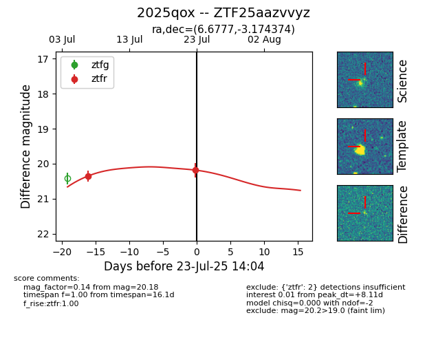

Target ZTF25aazvvyz at 2025-07-23 14:04, see:
FINK: fink-portal.org/ZTF25aazvvyz
Lasair: lasair-ztf.lsst.ac.uk/objects/ZTF25aazvvyz
ALeRCE: alerce.online/object/ZTF25aazvvyz
TNS: wis-tns.org/object/2025qox
YSE: ziggy.ucolick.org/yse/transient_detail/2025qox
alt names
ZTF25aazvvyz (ztf,fink)
2025qox (tns,yse)
coordinates:
equatorial (ra, dec) = (6.6777,-3.17437)
galactic (l, b) = (108.0063,-65.32707)
photometry
last ztfr=20.18
2 ztfr detections
